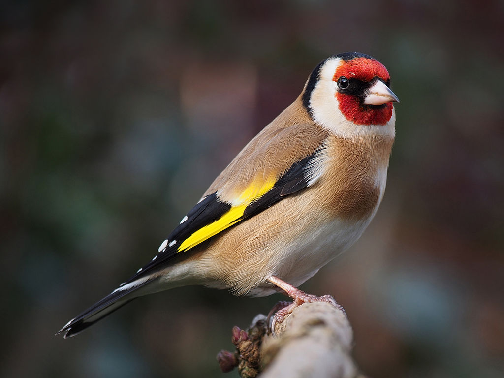

Il nome scientifico della specie, carduelis, è un tautonimo, in quanto ripetizione di quello del genere: esso divenne tale quando la specie venne segregata dal genere Fringilla (dove l'aveva classificata Linneo nel suo Systema Naturae) per essere spostata in un genere a sé stante. Carduelis era il nome con cui questi uccelli erano conosciuti nell'antica Roma, derivante (come del resto la sua controparte italiana, di diretta derivazione latina) dalla pianta del cardo, dei cui semi (specialmente di quelli del cardo rosso) i cardellini sono notoriamente ghiotti.
Il cardellino è un uccello molto vispo e vivace, dalle abitudini essenzialmente diurne, che passa la maggior parte della giornata alla ricerca di cibo, mantenendosi generalmente fra l'erba alta o al suolo, per poi fare ritorno sul far della sera verso posatoi predefiniti al riparo fra i rami degli alberi, dove poter riposare. All'infuori della stagione degli amori, i cardellini si muovono in piccoli stormi, che si tengono in contatto quasi costante fra loro mediante richiami cinguettanti (detti zic ed utilizzati dai bracconieri per attrarre esemplari selvatici da catturare), mentre durante la stessa le coppie tendono ad isolarsi ed appartarsi.